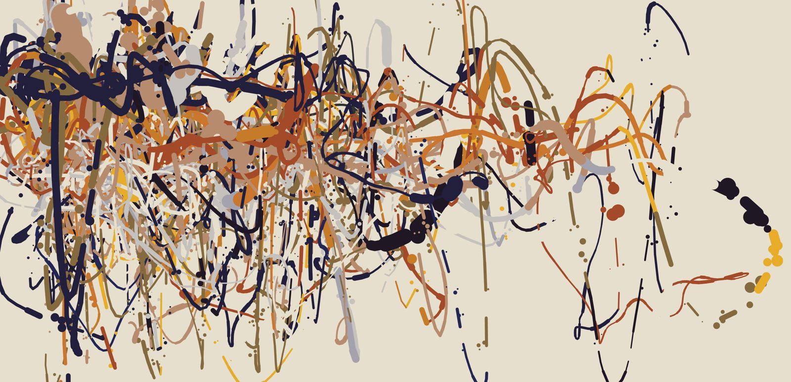
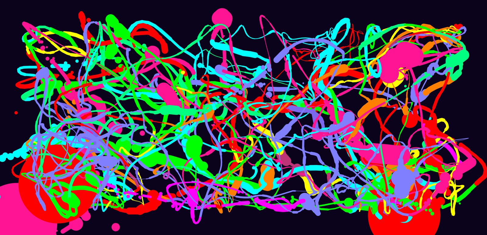
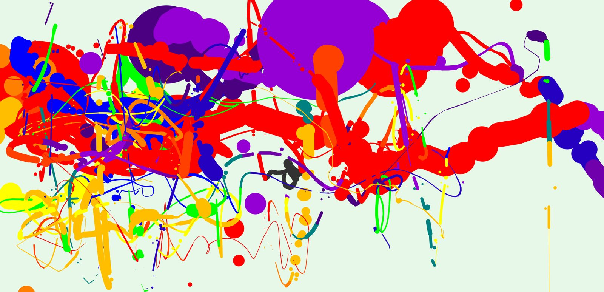
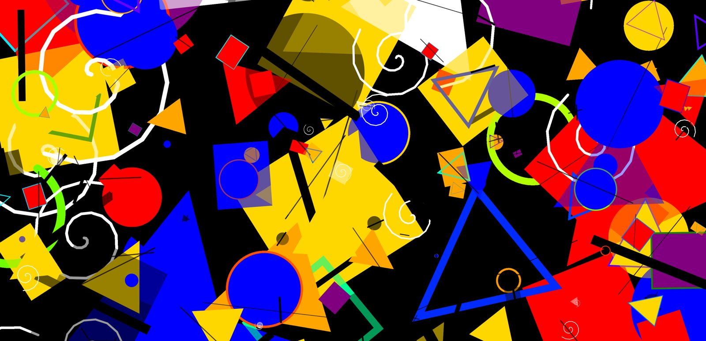

Voice Painter
Paint without hands — your voice is the controller.
Sound on: Voice Painter painting along to “Přemžitky”, the album I recorded percussion for.




The idea
What if the only input was sound? Voice Painter listens to the microphone, detects pitch with a neural network (CREPE) and loudness in real time, and turns them into brush strokes. Singing, whistling, clapping or playing an instrument all become ways to paint.
The core loop is immediate: make a sound → see it on the canvas → adjust your voice. Players start experimenting within seconds, without a tutorial.
Input → output mapping
| Loudness | → | Brush / shape size and speed |
| Pitch (note) | → | Color, and shape in Kandinsky mode (C = circle, E = triangle…) |
| Low / high notes | → | "Gravity" pulling the brush down or up |
| Silence | → | The brush rests — a natural pause button |
Next steps
I'm currently building a mobile version of the game.